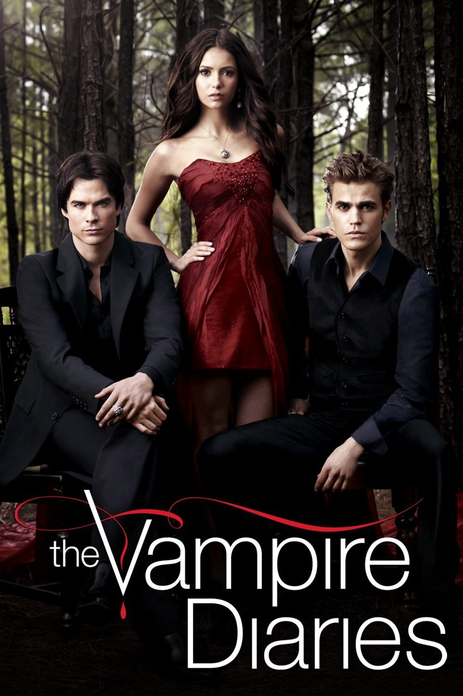

The Vampire Diares
4º Lugar no nosso ranking

Por que merece o 4º lugar?
Em 4º lugar, The Vampire Diaries se destaca pela forma envolvente como mistura o drama com o sobrenatural. Além do famoso e intenso triângulo amoroso entre Elena e os irmãos Salvatore, a série construiu uma mitologia riquíssima cheia de vampiros, bruxas e reviravoltas chocantes. Com vilões incrivelmente carismáticos, é uma história que marcou uma geração inteira.